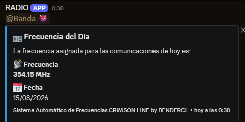

Aventuras con Bender
Repositorio con un proyecto de narrativa interactiva / minijuegos. Contiene HTML, CSS y JavaScript para crear escenas y mecánicas sencillas; pensado para aprender y experimentar con interactividad en la web.
Tecnologías: HTML, CSS, JavaScript · Repositorio público

@BendeRCL / frecuencias-812
Script en Python que genera la "Frecuencia del Día" y la publica como mensaje (embed) en un canal (por ejemplo, vía webhook a Discord). Preparado para ejecutarse periódicamente con GitHub Actions o en un servidor propio.
Tecnologías: Python · requests · GitHub Actions · Webhooks
@BendeRCL / frecuencias-812
Script en Python que genera la "Frecuencia del Día" y la publica como mensaje (embed) en un canal (por ejemplo, vía webhook a Discord). Preparado para ejecutarse periódicamente con GitHub Actions o en un servidor propio.
Tecnologías: Python · requests · GitHub Actions · Webhooks